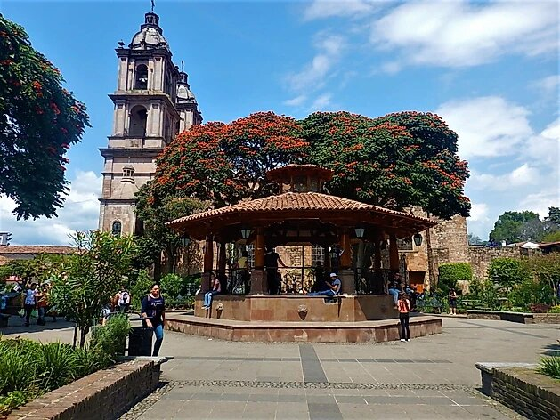

Es la iglesia principal y el corazón del Pueblo Mágico. Se ubica frente al Jardín Central (Plaza Independencia). Resalta por sus enormes columnas neoclásicas y sus torres gemelas, que se consideran las más altas del Estado de México para un templo religioso.
Aunque sus orígenes datan del siglo XVI, su fisonomía actual se concluyó formalmente en 1994. Su interior alberga majestuosos vitrales y esculturas del siglo XVII. Su gran fiesta patronal se realiza el 4 de octubre

El Kiosco de Valle de Bravo es la estructura central de la Plaza Independencia (Jardín Central) y el principal punto de reunión en el corazón de este Pueblo Mágico.
Destaca por su arquitectura tradicional con techumbre de teja roja, columnas de madera y una base de cantera rodeada de jardines.
Es el mercado tradicional donde los habitantes locales compran insumos diarios y los visitantes disfrutan de la gastronomía típica de la región. Se encuentra a una cuadra del jardín central, entre las calles Miguel Hidalgo e Independencia.